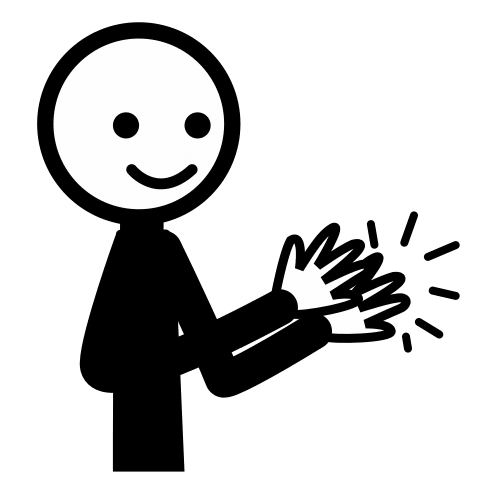
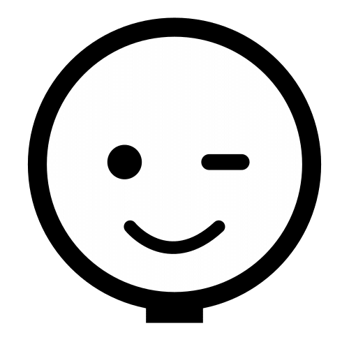

Antes de comenzar, descubre si esta guía es para ti
¿Quieres crear un Recurso Educativo Abierto para el Proyecto REA Andalucía?
¿Necesitas una guía con la que poder crearlo siguiendo pautas didácticas, de calidad y accesibilidad, técnicas y de estilo?
Audio
Sí necesito esta guía
Enhorabuena, ¡has llegado a la guía adecuada!
Avanza por los apartados del menú para conocer los fundamentos didácticos y pautas que pueden guiar tu diseño.
Todos los enlaces se abren en ventana nueva.
No necesito esta guía
¿Quieres ayudarnos a mejorarla?
Si esta guía no es para ti, puedes echarle un ojo y ayudarnos a mejorarla aportando tus sugerencias. Puedes escribirnos a la dirección de correo electrónico rea.ced@juntadeandalucia.es